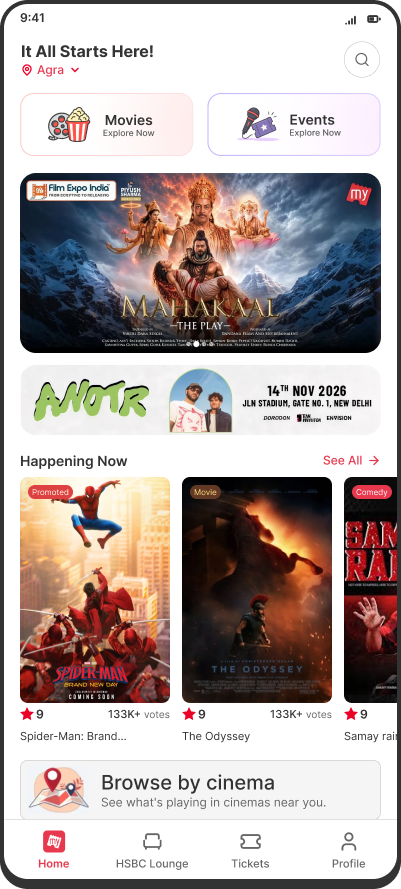
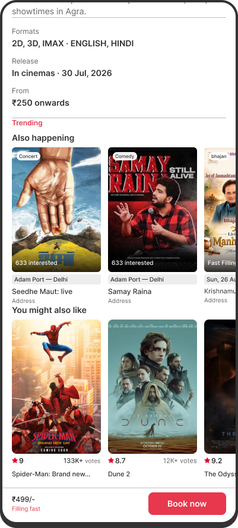
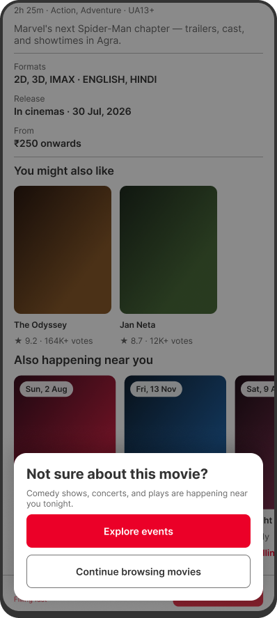
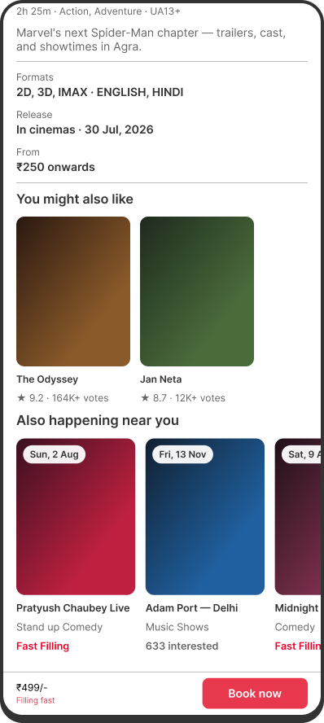
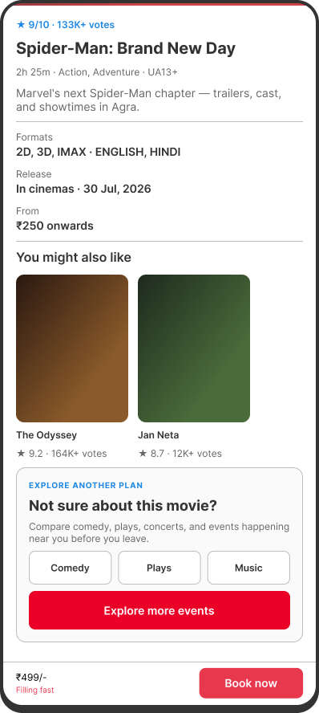
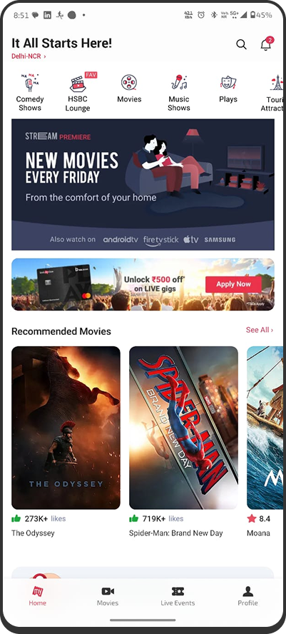
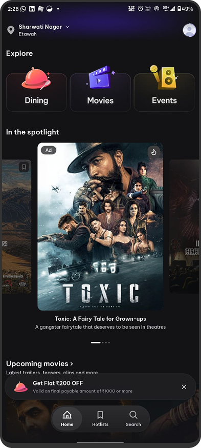

Most peopleasked
Finding 1 — Users still wanted to go out
People could still want to go out that night.
Abhay: “No… after opening the app.”Users often entered Movies first and left when they couldn’t find a film worth booking. I redesigned the discovery experience to surface Events at two points — before users choose a category and when movie discovery stalls.
Most interviews
started with Movies — even when people hadn’t decided what to watch.


Most BookMyShow users open the app, go to Movies, and scroll through films first. When nothing feels interesting enough to watch, the app has other things to offer — comedy shows, concerts, and sports — but those options are easy to miss. I started by improving this drop-off point, then worked back to the homepage.
When users browse Movies and don’t find anything they want to book, they usually leave the app. BookMyShow already has other things to book: comedy shows, concerts, and sports. But those options are not shown clearly while the user is deciding what else to do.
How can BookMyShow show a useful next option when a user does not find a movie they want?
I interviewed 10 people — and checked Reddit, Quora, and app-store reviews — to understand what people do when they open BookMyShow and don’t find a movie they want to book.
Most peopleasked
People could still want to go out that night.
Abhay: “No… after opening the app.”Discoverygap
People often discovered events on Instagram, YouTube, or through friends, then used BookMyShow later to buy tickets.
Aditi: “Usually somewhere else first.”Core insight
A user may still want to go out even if they don’t choose a movie.
The opportunity was not to push users into events. It was to show relevant events when users were still looking for something to do.
Current
No movie feels worth booking → User leaves → Event options are missed
Opportunity
No movie feels worth booking → Alternate experience → Booking → Potential conversion
The question wasn’t how to route users away from Movies. It was where to place a bridge from a failed movie discovery to other bookable entertainment — without making the alternative feel like a detour.
Option 1
Exit modal that appears when the user is about to leave.

Option 2
Events row with nearby events inside the movie page.

Option 3
Explore card that opens Events categories.

Chosen: Show nearby Events inside the movie page. The Events row keeps users in context and shows real alternatives without interrupting them — so the next option feels like a continuation, not a detour.
Option 1
Tapping the card opens the full event detail page.
Option 2
Tapping the card opens a compact preview with key information, then lets users view details or book.
Chosen: Preview the event before asking users to commit. Tapping an unfamiliar event doesn’t mean they’re ready to leave the movie page. The preview keeps them in place while giving enough information to decide whether the event is worth opening.
Card → Preview → View details / Book
Events appear before more movie recommendations, so users can see another kind of plan before leaving.
Recovery
The Events row gave movie browsers a relevant alternative after they had already entered Movies.
The bigger question
Why were undecided users entering Movies in the first place?
Hypothesis
If BookMyShow could surface Events before users committed to a category, we might prevent the dead-end rather than only recover from it.
So I moved one step upstream — from movie-detail recovery to homepage discovery.
Most people I interviewed went to Movies first.
BookMyShow · Movies first

District · equal entry points

This user wants ideas, not a specific category.
This user wants to go out, but may not want a film.
The homepage was pushing users toward Movies before they had chosen what kind of plan they wanted.
Audit
Featured carousels, recommended films, and promotional banners occupy most of the feed.
Comedy, Plays, Music and other categories appear mainly as small chips at the top. Participants often overlooked them or continued into Movies.
Each category opens separately, so it is hard to compare movies, comedy, concerts, and sports in one place.
“What should I do tonight?”
“Choose a category first.”
Evidence
Most people I interviewed went to Movies first, even when they hadn’t decided on a movie.
Implication
The homepage was asking users to choose a film before helping them choose what kind of plan they wanted.
Option 1
Keep Comedy, Plays, Music, Sports and other categories as the primary entry points.
Option 2
Give Movies and Events equal weight at the top of the homepage.
Option 3
Ask users to choose Movies or Events before entering a shared listing.
Chosen: Two equal category entries so Movies and Events get the same visual priority.
Option 1
Separate Movies and Events content while keeping the existing ad stack.
Option 2
One carousel combining films, comedy, concerts, plays and other bookable experiences.
Option 3
Keep Recommended Movies as the primary discovery feed.
Chosen: Mixed discovery, so undecided users can browse movies and events together before choosing a category.
Knows what they want
Movies | Events selector
Undecided
Mixed discovery
I tested with 3 participants across 3 tasks: finding Events directly, browsing without a fixed plan, and still reaching Movies easily.
Passed
The selector gave them a direct path to Events home and tickets.
Needs validation
They noticed the mixed carousel first, but this needs testing with more real users.
Passed
Movies stayed easy to find for users who came for films.
Prototype testing supported the basic structure, but open-ended browsing still needs validation with more users and live traffic.
The top of the homepage now lets users choose between Movies and Events, instead of pushing them straight into Movies.
Walk through the redesigned homepage and event booking flow.
Play prototypeThe two changes work together. The homepage helps users choose between Movies and Events earlier. The movie detail page shows Events when a user is already browsing a film but may still be open to another plan.
Homepage
Movie detail
Choose earlier → Continue later.
The problem wasn’t simply that Events were hard to find. BookMyShow was not showing events at the moments when users were still deciding what to do.
Most people still entered Movies first — even when they hadn’t decided what they wanted. That meant recovery on the movie page was necessary, but not enough.
Events were easy to find, and Movies stayed easy to find. Open-ended browsing still needs more users.
This is prototype testing, not live traffic — so there are no real business metrics yet. The movie-detail row still depends on users scrolling far enough to see it, and homepage behaviour needs validation at scale. If more users notice events while browsing, BookMyShow gets more chances to turn that into bookings. Live traffic would validate that chain.
The goal wasn’t to make users choose Events instead of Movies. It was to make sure that browsing Movies did not hide every other plan BookMyShow already sells.